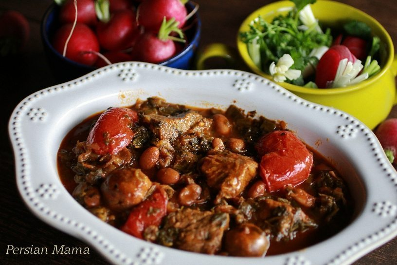

Ghormeh Sabzi

This image and all recipe contents are borrowed from the blog, Persian Mama.
See Original Recipe Here
- 1½ large yellow onion sliced thin and fried golden brown in 3-4 TBSP vegetable oil (or 5 ounces fried onions)
- 2 pounds skinless chicken drumsticks or thighs (4-5 pieces)
- 8 ounces walnut halves (about 2 cups)
- ¼ cup cold water
- 1 cup pomegranate concentrate
- ¼ tsp kosher salt
- ⅛ tsp freshly cracked black pepper
- Pick through the walnuts for any shells, and add to a food processor and process until it turns to a tan-colored paste.
- With the food processor running add ¼ cup cold water through the feed chute. Continue processing until the paste becomes uniformly beige in color.
- Fry the sliced onions with 3-4 TBSP vegetable oil in a 6-Qt stockpot until golden brown. Remove from the pot.
- Add chicken to the same stockpot and top it with the fried onions.
- Spoon the walnut paste evenly over the fried onions. Sprinkle with salt and pepper. Drizzle the pomegranate concentrate over all the ingredients.
- Bring to a boil over medium heat. The pomegranate concentrate tends to stick and burn fairly quickly so avoid high heat.
- Reduce the heat to medium low, cover the pot and simmer for 15 minutes.
- Now reduce the heat to low and simmer covered for an additional 1 hour 15 minutes, or until the sauce is thickened and the chicken is fork tender and falls off the bone. Stir every 15 minutes or so to make sure the sauce does not stick to the pot.
- If at the end of this time period the sauce has not thickened enough, leave the pot uncovered for about 10 minutes on low heat for a thicker sauce. Transfer the Fesenjan to a serving dish and sprinkle some pomegranate seeds on top as garnish. Serve over white Persian steamed rice.